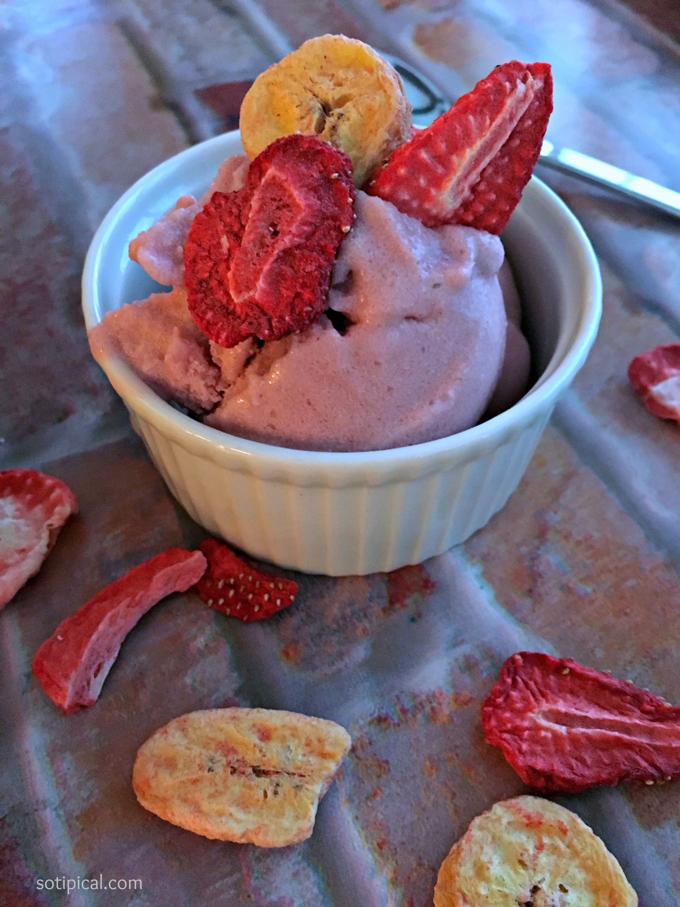

Strawberry and banana ice cream

Description:
Refreshing ice cream to people who need something good and cold and vegans
Ingredients:
- 5 strawberrys
- 1 banana cavendish
- 1 pytaya
- 200ml coconut milk
- 1 tablespoon of cocoa in powder optional
Steps:
- wash straberrys and remove leaf and calyx with sharpen knife and dry water from strawberrys
- cut cavendish banana in slices and join with strawberry and put in freezer for six hours.
- remove pulp from pytaya
- use blender to mix frozen strawberry and banana, pytaya pulp, coconut milk